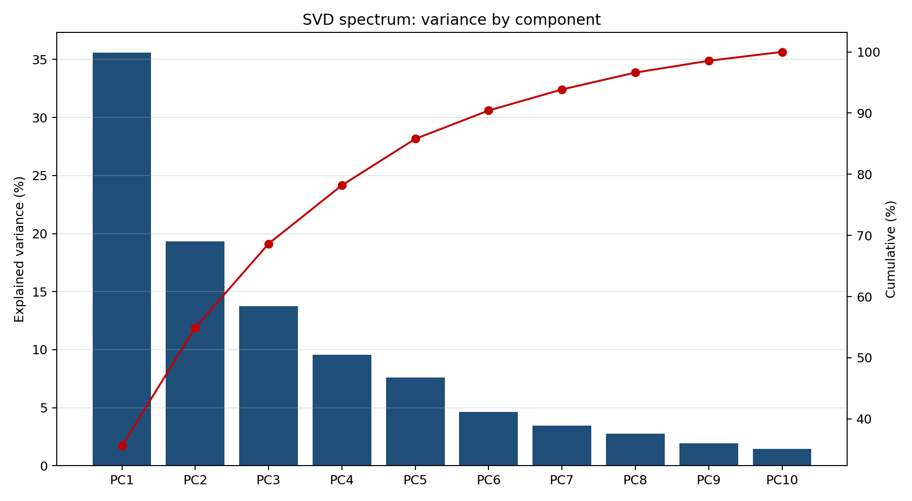
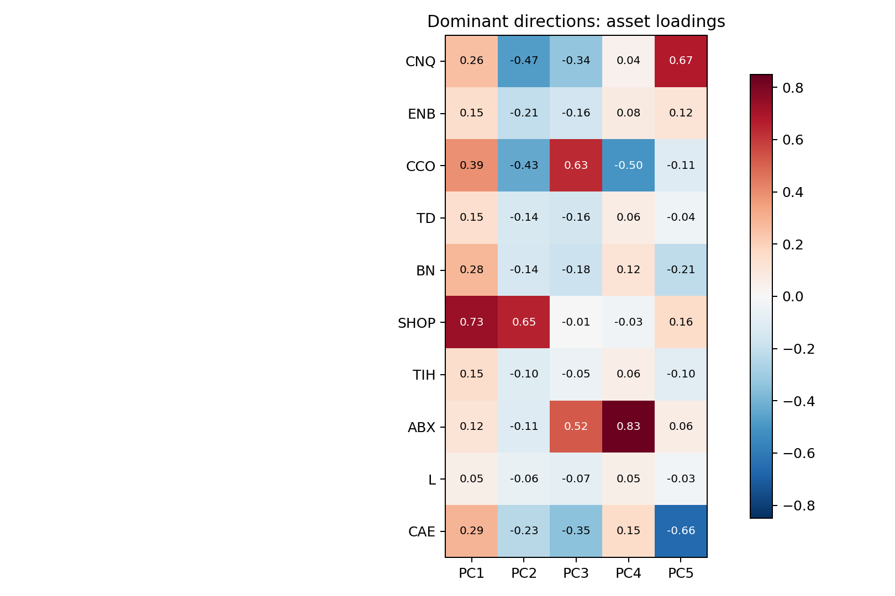
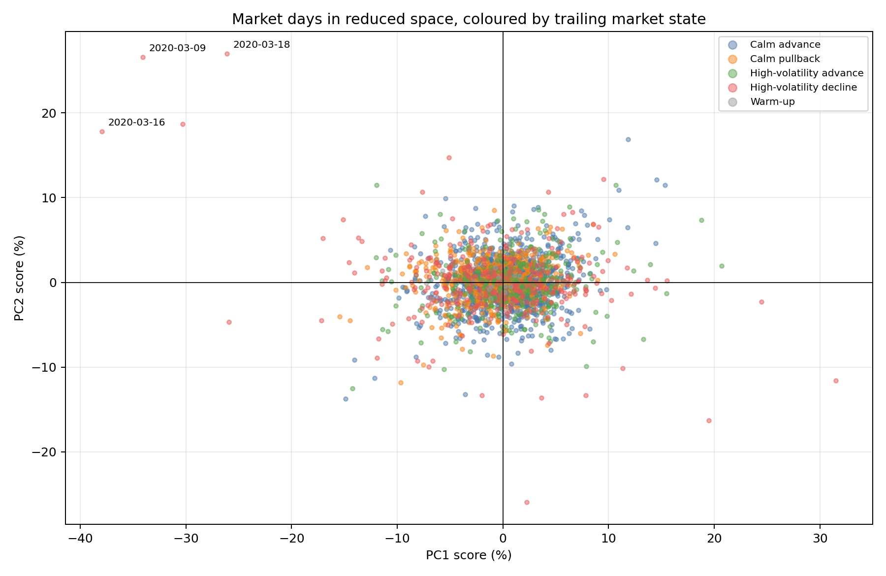
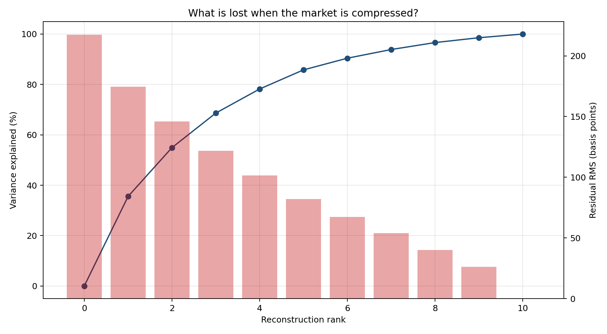
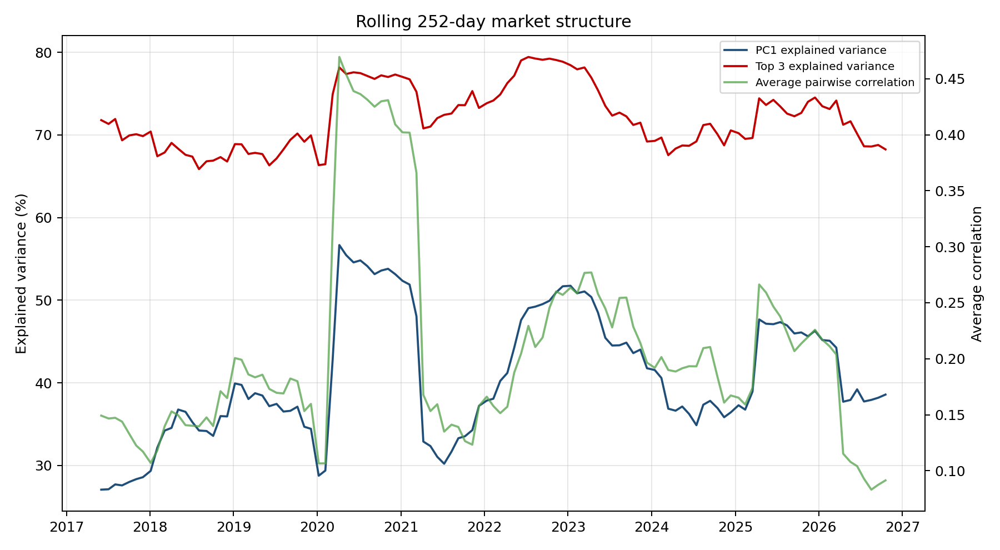
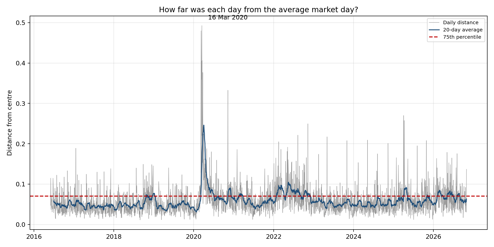

Daily data from 2016-06-02 to 2026-10-30. Ten TSX stocks. Latest trailing state: High-volatility advance.
| component | singular_value | explained_variance_ratio | cumulative_explained_variance |
|---|---|---|---|
| PC1 | 2.0966 | 0.3557 | 0.3557 |
| PC2 | 1.5462 | 0.1935 | 0.5492 |
| PC3 | 1.3024 | 0.1373 | 0.6864 |
| PC4 | 1.0866 | 0.0955 | 0.7820 |
| PC5 | 0.9682 | 0.0759 | 0.8578 |
| PC6 | 0.7567 | 0.0463 | 0.9042 |
| PC7 | 0.6523 | 0.0344 | 0.9386 |
| PC8 | 0.5840 | 0.0276 | 0.9662 |
| PC9 | 0.4878 | 0.0193 | 0.9854 |
| PC10 | 0.4240 | 0.0146 | 1.0000 |
| market_state | days | share_pct | average_benchmark_return_bp | equal_weight_return_dispersion_pct | average_distance_from_center | average_abs_pc1_score | average_rank3_residual_share | spells | average_spell_days | median_spell_days | longest_spell_days |
|---|---|---|---|---|---|---|---|---|---|---|---|
| Calm advance | 1373 | 52.9298 | 10.4314 | 11.8923 | 0.0519 | 0.0228 | 0.4406 | 86 | 15.9651 | 7.5000 | 75 |
| Calm pullback | 572 | 22.0509 | -14.6248 | 14.5022 | 0.0529 | 0.0269 | 0.4062 | 84 | 6.8095 | 4.0000 | 38 |
| High-volatility advance | 334 | 12.8759 | 22.5792 | 18.8119 | 0.0701 | 0.0344 | 0.4202 | 55 | 6.0727 | 3.0000 | 54 |
| High-volatility decline | 315 | 12.1434 | -12.8473 | 36.1290 | 0.0846 | 0.0506 | 0.3547 | 55 | 5.7273 | 2.0000 | 30 |
| date | distance_from_center | equal_weight_return | benchmark_return | market_state | largest_gain_stock | largest_gain_return | smallest_return_stock | smallest_return | pc1_score | pc2_score | rank3_residual_share |
|---|---|---|---|---|---|---|---|---|---|---|---|
| 2020-03-16 | 0.4927 | -0.1178 | -0.1041 | High-volatility decline | ABX.TO | 0.0556 | CNQ.TO | -0.3182 | -0.3794 | 0.1780 | 0.0268 |
| 2020-03-09 | 0.4799 | -0.1261 | -0.1083 | High-volatility decline | TIH.TO | -0.0444 | CNQ.TO | -0.3450 | -0.3407 | 0.2658 | 0.1406 |
| 2020-03-18 | 0.4063 | -0.1105 | -0.0790 | High-volatility decline | SHOP.TO | -0.0038 | CAE.TO | -0.2403 | -0.2612 | 0.2698 | 0.1375 |
| 2020-03-12 | 0.4044 | -0.1221 | -0.1318 | High-volatility decline | CCO.TO | -0.0742 | ENB.TO | -0.1804 | -0.3029 | 0.1868 | 0.1676 |
| 2020-03-24 | 0.3766 | 0.1129 | 0.1129 | High-volatility decline | CAE.TO | 0.1602 | TIH.TO | 0.0359 | 0.3152 | -0.1156 | 0.1748 |
| 2020-03-13 | 0.3590 | 0.0893 | 0.0922 | High-volatility decline | ENB.TO | 0.1880 | ABX.TO | -0.0716 | 0.1950 | -0.1629 | 0.2526 |
| 2020-11-09 | 0.3325 | 0.0317 | 0.0118 | High-volatility decline | CNQ.TO | 0.2039 | SHOP.TO | -0.1485 | 0.0223 | -0.2591 | 0.0822 |
| 2020-03-23 | 0.3064 | -0.0447 | -0.0540 | High-volatility decline | ABX.TO | 0.1008 | CAE.TO | -0.1573 | -0.0514 | 0.1471 | 0.4488 |
| 2025-04-03 | 0.2700 | -0.0577 | -0.0391 | High-volatility decline | L.TO | 0.0241 | SHOP.TO | -0.2185 | -0.2591 | -0.0466 | 0.0380 |
| 2025-04-09 | 0.2575 | 0.0659 | 0.0528 | High-volatility decline | SHOP.TO | 0.1615 | L.TO | -0.0074 | 0.2447 | -0.0227 | 0.0889 |





